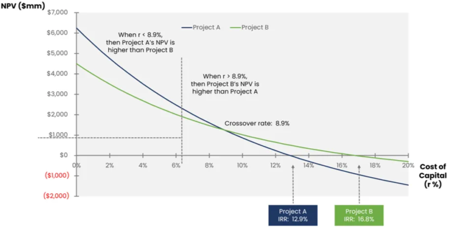

Investments
Cash
- Money
- Bank Account
It can be transformed into any asset, with two properties:
- Immediatly
- With Certainty
For a company, inventory has a monetary value (can be transformed in $)
- But it cannot be done immediatly, it takes some time
- It’s not certain since the price could change
Current assets (become cash in less then a year):
- Cash (bank account)
- Inventory
- Credit (account receivable)
- When a customer bought the products, but he pays later
Companies has always two parralel dynamics
- Economic Equilibrium from revenues (sales) and costs
- Financial Equilibrium from cash outflow (pay something in cash or extinguish your debt) and cash inflow (when credit becomes cash)
The two dynamics are asyncronous
- If you give your customer many months to pay, but your supplier doesn’t, you have a bigger cash outflow than inflow
- Some debts needs to be paid very shortly, like the wages, the VAT (value added tax) the pensions contribution
- Calculate the VAT difference between what you pay vs what you are paid and gives to the fisco
- Really difficult to work with the two
Investments
- Fixed Investment → Physical assets like buildings, machinery, etc.
- Intangible Investment → Non-physical assets, e.g., human capital (professional training courses).
- Financial Investment
- Shares → Ownership in a company.
- Bonds → Debt instruments (loans made to governments or corporations).
- Depreciation is a non-monetary cost (does not involve actual cash outflows). It accounts for asset value loss over time
Cash Flow Over Time
- Initial Investment → (negative because it's an outflow of cash).
- Future Cash Inflows →
Two important concepts:
- Capitalization:
- How an investment grows over time
- Discount:
- How future cash flows are valued today
With annual rate,
- Assuming the rate is constant in time, then:
- discount rate if talking about discount → eg 110 euros in one year or 100 now?
Money today is more valuable than the same amount in the future because:
- it can be invested and earn a return
- Inflation could kick in
Example
Imagine you invest €1,000 today in a bank that gives 5% annual interest.
- After 1 year:
Your investment grows because the bank pays you interest
- After 2 years:
More growth due to compounding if you keep the money invested
Now, imagine someone owes you €1,102.50, but they will pay you in 2 years.
How much is that worth today if the bank offers 5% interest?
We discount it back:
- So, that €1,102.50 in two years is only worth €1,000 today because if you had €1,000 now, you could invest it and earn the same €1,102.50.
DCF / NPV
Discounted Cash Flow or Net Present Value
{kind=link}
IRR → internal rate of return (in the order of percentage points)
- It is the rate that makes
WACC → The average cost of financing, depends on the ECB-FED interest rates
- When it change, some invenstments can become profitable or not
Rules of profitable investment:
-
-
- Central Bank land money to higher interest to bank that will increase the interest to which they lend money to privates
Cumulative Cash Flow
Tracks how cash flow evolves over time:
If CUM(t) > 0, the investment has recovered its initial cost and is making a profit
Investment Decision
{kind=link}

- Choose based on objectives:
- Higher IRR → Prioritizing fast returns.
- Higher NPV → Maximizing long-term profitability.
- If NPV is only positive for small , it means returns are in the distant future.
- When is high (high discount rate), the value of those future returns shrinks too much, making the investment unprofitable.